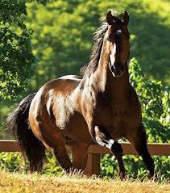

1. Origem e História
Desenvolvido nos Estados Unidos no século XVII.
Resultado do cruzamento entre cavalos de corrida ingleses e raças nativas americanas.
Nome derivado da sua habilidade em correr um quarto de milha (aproximadamente 400 metros).
2. Características Físicas
Altura: Geralmente entre 14,2 e 16,2 mãos.
Conformação: Corpo compacto, musculoso, peito largo e dorso curto.
Cabeça: Proporcional, com perfil reto ou ligeiramente convexo.
Patas: Fortes, com cascos duros e bem formados.
Pelagem: Variedade de cores, incluindo alazão, baio, preto, tordilho e pintado.
3. Andamento e Velocidade
Conhecido por sua velocidade explosiva em curtas distâncias.
Andamento característico é o trote, mas também é ágil em outros movimentos.
Grande capacidade de aceleração.
4. Temperamento
Geralmente, são dóceis, inteligentes e bem-dispostos.
Altamente treináveis, com bom nível de aceitação de comandos.
Tendem a ser afetuosos e se vinculam bem com seus tratadores.
5. Versatilidade de Uso
Utilizados em diversas modalidades equestres, incluindo:
Corridas.
Rodeios (team roping, barrel racing, vaquejada e etc.).
Atividades de trabalho rural.
6. Treinamento e Adestramento
Rápido aprendizado e habilidade de adaptação a diferentes disciplinas.
Frequentemente envolvidos em competições de velocidade e agilidade.
Bom desempenho em treinamentos de resistência e trabalho no campo.
7. Saúde e Manutenção
Geralmente são saudáveis e resistentes.
Necessitam de cuidados regulares, incluindo vacinação, desverminação e cuidados com os cascos.
Importante garantir uma dieta balanceada para manter a condição física.
8. Reconhecimento e Registros
Reconhecido pela American Quarter Horse Association (AQHA).
Registro genealógico que garante a pureza da raça e acompanhamento da linhagem.
9. Cultura e Tradição
Cavalos Quarto de Milha têm um papel importante na cultura americana, especialmente nas regiões rurais.
Popular em rodeios e eventos equestres, simbolizando o espírito cowboy.
10. Impacto e Popularidade
Uma das raças mais populares nos Estados Unidos e no mundo.
Utilizados amplamente em competições equestres, destacando-se pela versatilidade e performance.
CONCLUSÃO
O Quarto de Milha é uma raça icônica, conhecida por sua velocidade, força e versatilidade.
Desde suas origens na América até seu papel proeminente em diversas modalidades equestres,
ele combina excelência atlética com um temperamento amigável. Ideal para uma variedade de atividades,
o Quarto de Milha continua a ser uma escolha preferida para cavaleiros de todos os níveis,
consolidando-se como um símbolo da cultura equestre americana.
Página inicial
Puro-sangue
Mangalarga